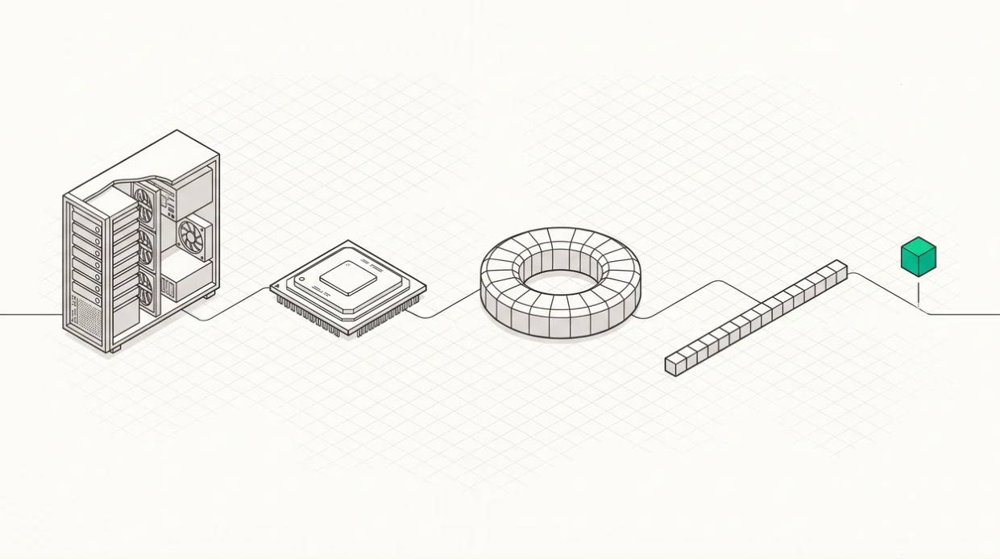

From Tin to Tokens
Building an LLM Inference Stack from Scratch in Rust
A free textbook on inference-stack engineering. It covers the whole stack, from the driver interface where you write ioctl structures by hand to an HTTP endpoint serving thousands of concurrent users: attention kernels, a paged KV cache, a scheduler, multi-GPU collectives, a quantisation pipeline, and the correctness apparatus that proves any of it works. Concepts come first and implementations follow, because the implementations change every eighteen months and the concepts don't.
Architectural Blueprint & Layer Dependencies
6 core architectural layers explored step-by-step with production-grade Rust kernels, driver shims, and memory allocators.
Hardware & Driver
Ch 4–7 · KFD ioctls, GPU virtual memory mapping, command ring buffers, and asynchronous queue dispatch.
Attention & Memory
Ch 8–14 · FlashAttention-2 tiling, Split-KV online softmax reduction, paged KV block tables, and prefix caching.
Serving Engine
Ch 15–20 · Continuous iteration-level batching, chunked prefill, RadixAttention trees, and speculative verification.
Model Execution
Ch 21–26 · Grouped GEMM routing for MoE, fused RMSNorm kernels, autoregressive decode loops, and multimodal adapters.
Multi-GPU Distributed
Ch 27–30 · NVLink/PCIe collectives, ring all-reduce, pipeline parallelism, and disaggregated prefill/decode serving.
Production & Proof
Ch 36–39 · Mathematical correctness test harness against f64 oracles, throughput benchmarks, and the 7-stage build order.